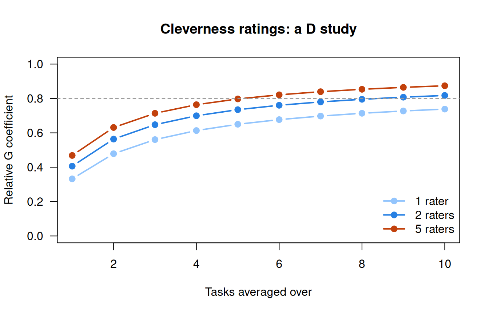

Many sources of error: generalizability theory
What this is for
Classical test theory gives a score one error term. Suppose a creativity researcher asks 202 people to list unusual uses for a paperclip, a garbage bag and a rope, and has five raters judge how clever each list is. The error then has at least two sources: a respondent might have done better with other objects, and would have got a different score from other raters. Which source is larger decides what to do next. If the raters disagree, train them or add raters; if respondents’ standing shifts from object to object, add objects. Generalizability theory (G theory) splits the error into its sources and prices each one (Cronbach, Rajaratnam & Gleser, 1963). This lesson estimates the pieces with a random-effects model, turns them into reliability coefficients, asks what a different design would buy, and treats interrater reliability as one case of the same idea. In the cleverness ratings the answer is more tasks; in a second table, teachers rating essays, it is more raters.
Goals
By the end of this lesson you should be able to:
- name the facets of a measurement design and say which are crossed with which;
- estimate variance components for a persons × tasks × raters design with
lme4, and say which ones are error for which decision; - compute relative and absolute G coefficients, and show that the one-facet relative coefficient is alpha;
- use a D study to decide whether to add tasks or raters;
- compute consistency and agreement intraclass correlations, and say when each is the one to report.
Core ideas
One error term, many sources
Where does \(E\) come from? CTT doesn’t ask. The items behind alpha are one source; From construct map to items added another, the rater who scores a constructed response. There are more: the occasion, the form, the prompt. G theory calls each such source a facet, and each of its values (this rater, that task) a condition (Cronbach, Gleser, Nanda & Rajaratnam, 1972, a book with no DOI, linked here through Bock’s review in Science).
G theory applies that view to every facet. The tasks we used are a sample from the tasks we could have used; the raters, from the raters we would accept. The score we would like is a respondent’s average over all of them, the universe score (G theory’s counterpart of the true score). The question is how well an average over the few conditions we actually used stands in for it: how far can we generalize from this score (Shavelson, Webb & Rowley, 1989)?
Variance components
Take the cleverness design: every person \(p\) does every task \(t\), and every rater \(r\) rates every response, so all three are crossed. A rating is a sum of effects: \[X_{ptr} = \mu + \nu_p + \nu_t + \nu_r + \nu_{pt} + \nu_{pr} + \nu_{tr} + \nu_{ptr,e}.\] Each \(\nu\) is a random effect with mean zero and its own variance, and the effects are uncorrelated, so the variance of one rating splits into seven variance components, \(\sigma^2_p + \sigma^2_t + \dots + \sigma^2_{ptr,e}\) (Brennan, 2001). Each has a plain reading. \(\sigma^2_p\) is how much people differ: the signal. \(\sigma^2_r\) is how much raters differ in severity. \(\sigma^2_{pt}\) is how much people’s standing changes from task to task (someone good with rope, less so with paperclips). \(\sigma^2_{pr}\) is raters disagreeing about who is better. The last term mixes the three-way interaction with everything else the design can’t separate from it, hence the \(e\).
How do we estimate them? Classically, from an analysis-of-variance table (the Go deeper callout below), a reasonable choice for a balanced design, where it gives the estimates in closed form. This lesson fits the model directly: each term is a random intercept in a mixed model, and restricted maximum likelihood estimates the variances (Searle, Casella & McCulloch, 1992). With lme4 (Bates, Mächler, Bolker & Walker, 2015) and a long table with one row per rating:
lmer(resp ~ 1 + (1 | id) + (1 | item) + (1 | rater) +
(1 | id:item) + (1 | id:rater) + (1 | item:rater), data = ratings)The residual variance is \(\sigma^2_{ptr,e}\). In a balanced design the two routes agree whenever no ANOVA estimate is negative (Searle et al., 1992); the model-based route also handles missing ratings and unbalanced designs, which the second table below needs.
Two G coefficients
Why are some components error only some of the time? It depends on the decision. For a relative decision (who ranks above whom), only the components that change a person’s standing count: those that interact with \(p\). For a score averaged over \(n_t\) tasks and \(n_r\) raters, the relative error variance is \[\sigma^2_\delta = \frac{\sigma^2_{pt}}{n_t} + \frac{\sigma^2_{pr}}{n_r} + \frac{\sigma^2_{ptr,e}}{n_t n_r}.\] For an absolute decision (is this score above 3? how clever is this list, on the rating scale?), a harsh rater or a hard task moves the score itself, so the main effects count too: \[\sigma^2_\Delta = \sigma^2_\delta + \frac{\sigma^2_t}{n_t} + \frac{\sigma^2_r}{n_r} + \frac{\sigma^2_{tr}}{n_t n_r}.\] Each coefficient sets the universe-score variance against one of them (Brennan, 2001): the generalizability coefficient \(E\rho^2 = \sigma^2_p/(\sigma^2_p + \sigma^2_\delta)\) and the dependability coefficient \(\Phi = \sigma^2_p/(\sigma^2_p + \sigma^2_\Delta)\). Since \(\sigma^2_\Delta \ge \sigma^2_\delta\), \(\Phi\) is never the larger. Error near a cut score is taken up in What does a score mean?.
Try it: the two coefficients side by side
Each bar is one coefficient’s denominator: the universe score and the error that coefficient counts. The light pieces (task, rater, task × rater) count only for Φ. The sliders start at the cleverness ratings’ estimates from With real data; switch to the essays to see raters that differ in severity. (For the essays, “task” is a rating criterion.)
For the cleverness ratings, with 3 tasks and 5 raters, the light pieces are slivers and the coefficients nearly agree (0.71 and 0.71); for the essays, with one teacher, teachers’ severity adds a light block and they part (0.47 and 0.40). The coefficients agree when raters and tasks don’t differ in harshness or difficulty and part when they do, so use Φ when the decision is absolute (a cut) or raters vary across respondents, and Eρ² for ranking in a fully crossed design, the rule this lesson’s verdict (end of the interrater section) makes its own.
What does the simplest case look like? Keep one facet, items, in a persons × items design. Then \(\sigma^2_\delta = \sigma^2_{pi,e}/n_i\) and \[E\rho^2 = \frac{\sigma^2_p}{\sigma^2_p + \sigma^2_{pi,e}/n_i},\] which is Cronbach’s alpha (Cronbach, 1951; Hoyt, 1941, estimated reliability from the same analysis of variance). Alpha is the one-facet relative G coefficient. The callout shows why, and the real data check it.
D studies: what would another design buy?
The G study estimates the components; a decision study (D study) uses them to ask what a different design would give. The formulas above already do this: change \(n_t\) and \(n_r\) and recompute. With one facet this is the Spearman–Brown formula (problem 1). With two there is a choice, and the components say which lever moves the coefficient more.
Try it: a D study
The components are the ones set in the previous widget. Each line is a number of raters; the horizontal axis is the number of tasks.
With the cleverness components, ten tasks with one rater reach 0.74 and one task with ten raters 0.49: averaging over tasks divides person × task (0.284), while averaging over raters divides the much smaller person × rater (0.053). Switch the previous widget to the essays and the lines spread apart: raters become the lever. Every curve flattens, as Spearman–Brown’s did. Past a point only the other facet can help.
Interrater reliability as a G study
Drop the tasks and keep the raters: a persons × raters design, the setting for interrater reliability. The intraclass correlations of Shrout and Fleiss (1979) and McGraw and Wong (1996) are the G coefficients of this design. The consistency ICC for one rater, ICC(C,1) in McGraw and Wong’s notation, is \(\sigma^2_p/(\sigma^2_p + \sigma^2_{pr,e})\), the relative coefficient. The absolute agreement ICC, ICC(A,1), is \(\sigma^2_p/(\sigma^2_p + \sigma^2_r + \sigma^2_{pr,e})\), the dependability coefficient. Their versions for a score averaged over \(k\) raters are the D study for \(k\) raters, and the consistency one is alpha with raters in place of items.
Try it: consistency and agreement
Forty simulated respondents, two raters. Rater B is harsher by a constant; both add rating noise.
At the starting values the consistency ICC is 0.84 and the agreement ICC 0.62: the points lie along a line, but below the dashed line of equal ratings. Slide the harshness to 0 and the two ICCs meet; push it to 2 and agreement falls to 0.35 while consistency stays at 0.84. Consistency tracks the correlation; agreement also charges for the gap.
Which should you report? The coefficients answer different questions, and the choice rests on two facts about the use. If every respondent is scored by the same raters and only the order matters, severity cancels and consistency is the coefficient that describes the scores. If scores are compared with a fixed standard, or respondents are scored by different raters (each essay by whichever teacher it was assigned to), a harsh rater lowers some respondents’ scores and not others’, and rater variance is error even for ranking (Brennan, 2001, treats these nested designs). I report the absolute coefficient, \(\Phi\) or the agreement ICC, whenever raters vary across respondents or a cut is involved, and the consistency coefficient only for a fully crossed design whose scores are used to rank.
Simulate
The code generates a persons × tasks × raters design with known variance components (150 persons, 3 tasks, 3 raters, with components loosely like the cleverness ratings below), fits the crossed random-effects model with lme4, and compares the estimates and the G coefficients with the truth. Loading lme4 takes 10 to 20 seconds the first time the page runs code; the fit itself takes about two.
With the seed as written, the components that involve persons come back close (person 0.346 against 0.30; person × task 0.317 against 0.30), and so does the relative coefficient (0.692 against 0.668). The task component does not: 0.065 against 0.02. With three tasks, the variance of task effects is estimated from three numbers, however many persons there are. Change nt <- 3 to nt <- 10 and the coefficient for the new design rises to 0.842, though the task component is still off (0.067), since ten numbers are still few. Then put nt back and set nr <- 10: the relative coefficient rises only to 0.723. Person × rater is small, so extra raters have little error to remove.
With real data
Code
library(lme4)
options(digits = 7) # R's default, in case a .Rprofile changes it
# Variance components from a crossed random-effects fit, with their shares of the
# total. `labels` renames lme4's grouping factors (id, item, rater and their
# interactions) to the facets of the design.
components <- function(fit, labels) {
vc <- as.data.frame(VarCorr(fit))
v <- setNames(vc$vcov, labels[vc$grp])[labels]
data.frame(variance = round(v, 3), percent = round(100 * v / sum(v), 1))
}
# G coefficients for a D study that averages over n_i levels of the first facet
# (tasks, or criteria) and n_r raters. v holds the seven components in the order
# p, i, r, pi, pr, ir, residual.
g_coef <- function(v, n_i, n_r) {
rel <- v[4] / n_i + v[5] / n_r + v[7] / (n_i * n_r)
abs <- rel + v[2] / n_i + v[3] / n_r + v[6] / (n_i * n_r)
c(relative = v[1] / (v[1] + rel), absolute = v[1] / (v[1] + abs))
}
labels <- c(id = "person", item = "task", rater = "rater", "id:item" = "person x task",
"id:rater" = "person x rater", "item:rater" = "task x rater",
Residual = "residual (p x t x r, e)")
form <- resp ~ 1 + (1 | id) + (1 | item) + (1 | rater) +
(1 | id:item) + (1 | id:rater) + (1 | item:rater)Cleverness ratings: tasks or raters?
The main example is Forthmann-2024-cleverness_ratings, released by Forthmann and Myszkowski (2024) for a special issue of the Journal of Intelligence (CC BY 4.0; the project page points to Forthmann et al., 2017, as an earlier analysis of these data). Respondents listed unusual uses for three objects (the alternate uses task), and five raters rated each respondent’s list for each object for cleverness, on a scale stored as 1 to 5, with higher meaning cleverer. Silvia et al. (2008) study subjective ratings of divergent-thinking responses like these, and their reliability. The table’s job here: a fully crossed persons × tasks × raters G study. Download the code; it needs lme4.
Code
url <- "https://redivis.com/api/v1/tables/datapages.item_response_warehouse_2:v22_0.Forthmann-2024-cleverness_ratings/rows?format=csv"
cl <- read.csv(url)[, c("id", "item", "rater", "resp")]
c(respondents = length(unique(cl$id)), tasks = length(unique(cl$item)),
raters = length(unique(cl$rater)), ratings = nrow(cl),
missing = length(unique(cl$id)) * 3 * 5 - nrow(cl))respondents tasks raters ratings missing
202 3 5 3020 10 Code
table(cl$resp) # cleverness, 1 to 5; higher = cleverer
1 2 3 4 5
150 815 1115 760 180 Ten ratings are missing, all for one respondent, so the design is crossed but not quite balanced; lmer handles that without change.
Code
fit_cl <- lmer(form, data = cl)
vc_cl <- components(fit_cl, labels)
vc_cl| variance | percent | |
|---|---|---|
| person | 0.310 | 32.1 |
| task | 0.000 | 0.0 |
| rater | 0.020 | 2.1 |
| person x task | 0.284 | 29.4 |
| person x rater | 0.053 | 5.5 |
| task x rater | 0.012 | 1.2 |
| residual (p x t x r, e) | 0.286 | 29.6 |
People differ (person, 32.1% of the variance of one rating), but person × task is nearly as large (29.4%): being clever with a rope says only so much about being clever with a paperclip. Raters account for little: 2.1% for severity and 5.5% for disagreement about who is cleverer. The task component is estimated at zero, so the three objects are about equally hard to be clever with.
Code
v_cl <- vc_cl$variance
round(g_coef(v_cl, 3, 5), 2) # the design as run: 3 tasks, 5 ratersrelative absolute
0.71 0.71 Code
round(g_coef(v_cl, 3, 1), 2) # 3 tasks, 1 raterrelative absolute
0.56 0.54 Code
round(g_coef(v_cl, 6, 1), 2) # 6 tasks, 1 raterrelative absolute
0.68 0.65 Code
round(g_coef(v_cl, 3, 1e6), 2) # 3 tasks, as many raters as you likerelative absolute
0.77 0.77 Code
d_grid <- expand.grid(tasks = 1:10, raters = c(1, 2, 5))
d_grid$relative <- mapply(function(t, r) g_coef(v_cl, t, r)[1], d_grid$tasks, d_grid$raters)Code
cols <- c("1" = "#93c5fd", "2" = "#2780e3", "5" = "#c2410c")
plot(NULL, xlim = c(1, 10), ylim = c(0, 1), xlab = "Tasks averaged over",
ylab = "Relative G coefficient", las = 1, main = "Cleverness ratings: a D study")
for (r in c(1, 2, 5)) with(d_grid[d_grid$raters == r, ],
lines(tasks, relative, type = "b", pch = 19, lwd = 2, col = cols[as.character(r)]))
abline(h = 0.8, col = "#999", lty = 2)
legend("bottomright", paste(c(1, 2, 5), c("rater", "raters", "raters")), col = cols,
lwd = 2, pch = 19, bty = "n")
The design as run, 3 tasks and 5 raters, has a relative G coefficient of 0.71. Cut to one rater and it falls to 0.56, but one rater with 6 tasks gets 0.68: 6 ratings per respondent, against the 15 of the design as run, for nearly the same coefficient. No number of raters takes 3 tasks past 0.77, the ceiling set by person × task. In the figure, the lines for 2 and 5 raters sit close together. For this construct and these raters, the money goes on tasks. The absolute coefficient equals the relative one to two decimals (0.71), since the task and rater components are small.
Now the one-facet case, with real numbers. Average each respondent’s five ratings of an object, which leaves a persons × tasks table, and compute its G coefficient by the ANOVA route, by lme4, and as alpha:
Code
# The one-facet design. Average each person's five ratings of a task, which leaves
# a persons x tasks table with one score per cell (201 respondents rated on all three).
pt <- tapply(cl$resp, list(cl$id, cl$item), mean)
pt <- pt[complete.cases(pt), ]
n_p <- nrow(pt); n_i <- ncol(pt)
long <- data.frame(y = c(pt), p = factor(rep(rownames(pt), n_i)), i = factor(rep(colnames(pt), each = n_p)))
ms <- anova(lm(y ~ p + i, data = long))[["Mean Sq"]] # persons, tasks, residual
names(ms) <- c("persons", "tasks", "residual")
round(ms, 4) persons tasks residual
1.3060 0.8981 0.3415 Code
s2_p <- (ms["persons"] - ms["residual"]) / n_i # sigma^2_p from the EMS
s2_pi <- ms["residual"] # sigma^2_pi,e
anova_route <- c(s2_p, s2_pi, s2_p / (s2_p + s2_pi / n_i))
alpha <- (n_i / (n_i - 1)) * (1 - sum(apply(pt, 2, var)) / var(rowSums(pt)))
fit_pt <- lmer(y ~ 1 + (1 | p) + (1 | i), data = long)
v <- as.data.frame(VarCorr(fit_pt))
lme4_route <- c(v$vcov[v$grp == "p"], v$vcov[v$grp == "Residual"])
routes <- rbind(anova = anova_route, lme4 = c(lme4_route, lme4_route[1] / (lme4_route[1] + lme4_route[2] / n_i)))
colnames(routes) <- c("person", "residual (p x t, e)", "G coefficient")
round(routes, 4) person residual (p x t, e) G coefficient
anova 0.3215 0.3415 0.7385
lme4 0.3215 0.3415 0.7385Code
round(c(alpha = alpha), 4) alpha
0.7385 The two routes give the same components (0.3215 for persons, 0.3415 for the residual), and the G coefficient, 0.7385, is alpha for the three task scores to every digit shown.
Essays: when raters matter
The contrast is a table where raters are a large source of error: teacherjudgements_lohmann_2026_essayratings, from a study in which preservice English teachers rated essays by learners of English as a second language (Lohmann et al., 2026; CC BY 4.0). Each teacher rated five essays on four criteria (language quality, structure, content, and a holistic rating), from 1 (very low quality) to 7 (very high quality). The objects of measurement are now essays, so “person” in the output means essay, and the criteria take the place of tasks. The table also holds an expert benchmark score for every essay; our question is about the teachers, so we set it aside.
Code
url <- "https://redivis.com/api/v1/tables/datapages.item_response_warehouse_4:v7_0.teacherjudgements_lohmann_2026_essayratings/rows?format=csv"
es <- read.csv(url)
# The table also holds an expert benchmark score for every essay and criterion;
# the G study is about the teachers, so set it aside.
es <- es[es$rater != "expert_benchmark", c("id", "item", "rater", "resp")]
c(essays = length(unique(es$id)), criteria = length(unique(es$item)),
teachers = length(unique(es$rater)), ratings = nrow(es)) essays criteria teachers ratings
881 4 315 6300 Code
table(es$resp) # 1 (very low quality) to 7 (very high quality)
1 2 3 4 5 6 7
280 842 1142 1383 1310 948 395 Code
pairs <- unique(es[, c("id", "rater")])
table(table(pairs$rater)) # essays per teacher
5
315 Code
table(table(pairs$id)) # teachers per essay
1 2 3 4 5 6 7
435 270 126 34 11 4 1 This design is sparse. Every teacher rated 5 essays, but 435 of the 881 essays were rated by a single teacher, and only 50 by four or more. Essays and teachers are crossed in the model, but most essay–teacher pairs were never observed; the components rest on the essays that more than one teacher rated, and on each teacher’s five essays.
Code
# The default optimizer stops just short of lme4's convergence tolerance on this
# fit; bobyqa converges and gives the same estimates to three decimals.
fit_es <- lmer(form, data = es, control = lmerControl(optimizer = "bobyqa"))
vc_es <- components(fit_es, sub("t x r", "c x r", sub("task", "criterion", labels)))
vc_es| variance | percent | |
|---|---|---|
| person | 0.754 | 29.7 |
| criterion | 0.010 | 0.4 |
| rater | 0.246 | 9.7 |
| person x criterion | 0.243 | 9.6 |
| person x rater | 0.640 | 25.2 |
| criterion x rater | 0.047 | 1.8 |
| residual (p x c x r, e) | 0.602 | 23.7 |
The picture reverses. Teachers differ in severity (rater, 9.7% of the variance, against 2.1% in the cleverness ratings), and essay × rater is 25.2%, against the essays’ own 29.7%: teachers disagree about which essays are better. The criteria matter less (essay × criterion, 9.6%). The essay × rater component is separated from the residual by each teacher’s four ratings of an essay, so it is a teacher’s impression of an essay that carries across all four criteria. A halo effect, one of the effects named in Lohmann et al.’s title, would produce that pattern. On the rating scale, teachers’ severity has an SD of 0.50 points, against 0.87 for essays’ universe scores.
Code
v_es <- vc_es$variance
sapply(c(1, 2, 3, 5), function(r) round(g_coef(v_es, 4, r), 2)) # 4 criteria, 1-5 raters [,1] [,2] [,3] [,4]
relative 0.47 0.62 0.70 0.78
absolute 0.40 0.56 0.65 0.73Code
round(g_coef(v_es, 1e6, 1), 2) # one rater, as many criteria as you likerelative absolute
0.54 0.46 Code
round(sqrt(v_es[c(1, 3)]), 2) # SD of essays' universe scores; SD of teachers' severity[1] 0.87 0.50With one teacher and four criteria, the relative coefficient is 0.47 and the absolute 0.40. A second teacher brings them to 0.62 and 0.56; five, to 0.78 and 0.73. More criteria can’t do it: one teacher rating on as many criteria as you like reaches only 0.54. Here the lever is raters. And since each essay had its own teachers, the absolute coefficient is the one that describes these scores.
The two tables call for different designs, and only their variance components could say so.
Problems
- Derivation. For a persons × items design with one score per cell, write the persons and residual sums of squares in terms of the item variances and the variance of the total score, and show that \(1 - MS_{pi,e}/MS_p\) is Cronbach’s alpha (the Go deeper callout sketches the steps). Then show that the D-study coefficient for \(m n_i\) items is the Spearman–Brown formula with multiplier \(m\).
- Real data with a twist. From the cleverness components, find the combinations of tasks and raters that give a relative G coefficient of at least 0.8. Is there more than one? If a task costs a respondent five minutes and a rating costs a rater one minute per respondent, which design is cheapest for 200 respondents? Does the answer change for \(\Phi\)?
- Judgment: a sparse design. In the essay table, 435 of the 881 essays were rated by one teacher. Refit the model using only essays with at least two teachers. Which components change? Now suppose every essay had one teacher: which components could the data no longer separate, and what would that do to your D study?
- Design. Plan a G study for a performance assessment you know (a science practical, an oral exam, a portfolio). Name the facets, say which are crossed and which nested, and choose sample sizes. Which component do you expect to be largest, and what would you do if you were wrong?
- Real data: two raters. In the cleverness data, take raters 1 and 2 and the paperclip task. Compute the consistency and agreement ICCs from the two-way ANOVA mean squares (McGraw & Wong, 1996), and again from a
lmerfit with random intercepts for respondent and rater. Do the two routes agree? Which pair of raters agrees least? - Challenge (open). G theory treats raters as exchangeable draws from a pool, and a harsh rater as a random effect to be averaged away. When is a harsh rater a different kind of error from an inconsistent one, and when should severity be estimated and adjusted for instead? What would you need to know about the essays’ teachers to decide, and what model would you use? (Rater models in item response theory, such as the many-facet Rasch model in Going further, are one answer.)
Going further
- Brennan, R. L. (2001). Generalizability theory. Springer. https://doi.org/10.1007/978-1-4757-3456-0. The reference: designs, nested and fixed facets, estimation and D studies, at book length.
- Shavelson, R. J., & Webb, N. M. (1991). Generalizability theory: A primer. Sage. No DOI; see Sundre’s (1993) review. A gentler book-length introduction.
- Shavelson, R. J., Webb, N. M., & Rowley, G. L. (1989). Generalizability theory. American Psychologist, 44(6), 922–932. https://doi.org/10.1037/0003-066X.44.6.922. A short overview.
- Brennan, R. L. (1992). Generalizability theory. Educational Measurement: Issues and Practice, 11(4), 27–34. https://doi.org/10.1111/j.1745-3992.1992.tb00260.x. An instructional module on G and D studies.
- Cronbach, L. J., Rajaratnam, N., & Gleser, G. C. (1963). Theory of generalizability: A liberalization of reliability theory. British Journal of Statistical Psychology, 16(2), 137–163. https://doi.org/10.1111/j.2044-8317.1963.tb00206.x. Where the theory starts.
- McGraw, K. O., & Wong, S. P. (1996). Forming inferences about some intraclass correlation coefficients. Psychological Methods, 1(1), 30–46. https://doi.org/10.1037/1082-989X.1.1.30. The ICCs, sorted by design and by consistency versus agreement.
- Bates, D., Mächler, M., Bolker, B., & Walker, S. (2015). Fitting linear mixed-effects models using lme4. Journal of Statistical Software, 67(1). https://doi.org/10.18637/jss.v067.i01. How
lmerspecifies and fits crossed random effects. - Eckes, T. (2011). Introduction to many-facet Rasch measurement. Peter Lang. https://doi.org/10.3726/978-3-653-04844-5. Raters as a facet in an item response model, which estimates each rater’s severity and adjusts scores for it. The course has no lesson on rater models yet.
- De Boeck, P. (2008). Random item IRT models. Psychometrika, 73(4), 533–559. https://doi.org/10.1007/s11336-008-9092-x. Items as random effects in an item response model, an idea What is an item? takes further.
Data sources
Data from the Item Response Warehouse (each table name links to its IRW page); references from IRW biblio.
Forthmann-2024-cleverness_ratings: Forthmann, Boris, and Nils Myszkowski. 2024. “Analysis of a Divergent Thinking Dataset.” OSF. April 22. osf.io/a9qnc. <https://doi.org/No DOI>. Licence: CC BY 4.0.teacherjudgements_lohmann_2026_essayratings: Lohmann, J. F., Lötscher, F., Junge, F., Keller, S., Jansen, T., Fleckenstein, J., & Möller, J. (2026). Testing teacher judgments comprehensively: Accuracy, halo, frame of reference, strategy, and personality effects in holistic and analytic assessments of student essays.Journal of Educational Psychology, 118(6), 941–960. https://doi.org/10.1037/edu0000969. Licence: CC BY 4.0.
For instructors
- Source: new material, not in EDUC 252. The course’s landscape analysis (
notes/landscape-2026-09-24.md, gap 2) put G theory and interrater reliability into one lesson. - Default, to be revised (#76): the main line estimates variance components with
lme4, and the classical ANOVA / expected-mean-squares route is a Go deeper callout. This is the default while questions to colleagues are open; the lesson may instead lead with the ANOVA tables. - Timing: about 50 minutes for the core ideas and widgets; the two real-data analyses work as a 25-minute lab (the essay fit takes about half a minute in local R).
- Held back: nested designs and fixed facets are named, not developed (see Brennan, 2001); multivariate G theory is not covered. Raters in item response models (many-facet Rasch) are left to Going further; random item effects to What is an item?; error near a cut to What does a score mean?; occasions as a facet to Measurement invariance under treatment and life events.
- Solutions: held back in
solutions/g-theory.qmd(not published). Problem 6 is open.